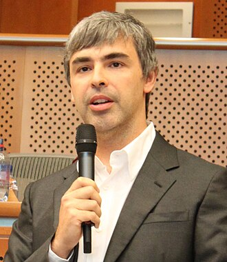
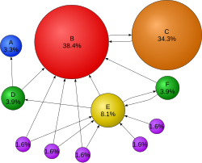
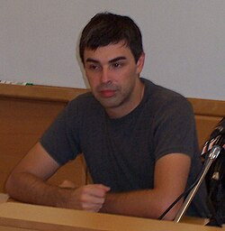
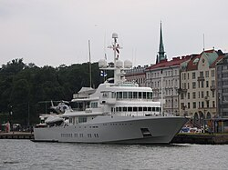

Larry Page
Source: https://en.wikipedia.org/wiki/Larry_Page
Category: founders_and_leaders
Depth: 1
Summary
Lawrence Edward Page is an American businessman and computer scientist who co-founded Google with Sergey Brin. Page is a centibillionaire and among the richest people in the world. According to Bloomberg Billionaires Index and Forbes, as of 2026, Page's estimated net worth stood at US$269 billion, making him the second-richest individual in the world.
Images





Full Article
American businessman (born 1973)
"Lawrence Page" redirects here. For the American ichthyologist, see Lawrence M. Page. For the English pop singer, see Larry Page (singer).
Lawrence Edward Page (born March 26, 1973) is an American businessman and computer scientist who co-founded Google with Sergey Brin. Page is a centibillionaire and among the richest people in the world. According to Bloomberg Billionaires Index and Forbes, as of 2026, Page's estimated net worth stood at US$269 billion, making him the second-richest individual in the world.
Page was chief executive officer of Google from 1997 until August 2001 when he was succeeded by Eric Schmidt, and then again from April 2011 until July 2015 when he became CEO of its newly formed parent organization Alphabet Inc. He held that post until December 4, 2019, when he and Brin stepped down from all executive positions and day-to-day roles within the company. He remains an Alphabet board member, employee, and controlling shareholder.
Page is the co-creator and namesake of PageRank, a search ranking algorithm for Google for which he received the Marconi Prize in 2004 along with co-writer Brin.
Early life
Lawrence Edward Page was born on March 26, 1973, in Lansing, Michigan. His mother is Jewish; his maternal grandfather later emigrated to Israel, though Page's household while growing up was secular. His father, Carl Victor Page Sr., earned a PhD in computer science from the University of Michigan. BBC reporter Will Smale described him as a "pioneer in computer science and artificial intelligence". Page's paternal grandparents came from a Protestant background.[citation needed] Page's father was a computer science professor at Michigan State University and his mother Gloria was an instructor in computer programming at Lyman Briggs College at the same institution. Larry's parents divorced when he was eight years old, but he maintained a good relationship both with his mother Gloria and his father's long-term partner and MSU professor Joyce Wildenthal.
When Larry Page was six years old, in 1979, his father brought home an Exidy Sorcerer computer, which Larry soon mastered and began using for schoolwork.
During an interview, Page recalled his childhood home "was usually a mess, with computers, science, and technology magazines and Popular Science magazines all over the place", an environment in which he immersed himself. Page was an avid reader during his youth, writing in his 2013 Google founders letter: "I remember spending a huge amount of time pouring [sic] over books and magazines". According to writer Nicholas Carlson, the combined influence of Page's home atmosphere and his attentive parents "fostered creativity and invention". Page also played instruments and studied music composition while growing up. His parents sent him to music summer camp—Interlochen Arts Camp in Interlochen, Michigan, and Page has mentioned that his musical education inspired his impatience and obsession with speed in computing. "In some sense, I feel like music training led to the high-speed legacy of Google for me". In an interview Page said that "In music, you're very cognizant of time. Time is like the primary thing" and that "If you think about it from a music point of view, if you're a percussionist, you hit something, it's got to happen in milliseconds, fractions of a second".
Page was first attracted to computers when he was six years old, as he was able to "play with the stuff lying around"—first-generation personal computers—that had been left by his mother and father. He became the "first kid in his elementary school to turn in an assignment from a word processor". His older brother Carl Victor Page Jr. also taught him to take things apart and before long he was taking "everything in his house apart to see how it worked". He said that "from a very early age, I also realized I wanted to invent things. So I became interested in technology and business. Probably from when I was 12, I knew I was going to start a company eventually."
Education
Page attended Okemos Montessori School (now called Montessori Radmoor) in Okemos, Michigan, from ages two to seven (1975 to 1979). He attended East Lansing High School, graduating in 1991. In summer school, he attended Interlochen Center for the Arts at Interlochen, Michigan, playing flute but mainly saxophone for two summers.
Page received a Bachelor of Science in Engineering with a major in computer engineering with honors from the University of Michigan in 1995 and a Master of Science in computer science from Stanford University in 1998.
While at the University of Michigan, Page created an inkjet printer made of Lego bricks (literally a line plotter), after he thought it possible to print large posters cheaply with the use of inkjet cartridges—Page reverse-engineered the ink cartridge and built the electronics and mechanics to drive it. Page served as the president of the Beta Epsilon chapter of the Eta Kappa Nu honor society, and was a member of the 1993 "Maize & Blue" University of Michigan Solar Car team. As an undergraduate at the University of Michigan, he proposed that the school replace its bus system with a personal rapid-transit system, which is essentially a driverless monorail with separate cars for every passenger. He also developed a business plan for a company that would use software to build a music synthesizer during this time.
PhD studies and research
After enrolling in a computer science PhD program at Stanford University, Page was in search of a dissertation theme and considered exploring the mathematical properties of the World Wide Web, understanding its link structure as a huge graph. His supervisor, Terry Winograd, encouraged him to pursue the idea, and Page recalled in 2008 that it was the best advice he had ever received. He also considered doing research on telepresence and self-driving cars during this time.
Page focused on the problem of finding out which web pages linked to a given page, considering the number and nature of such backlinks as valuable information for that page. The role of citations in academic publishing would also become pertinent for the research. Sergey Brin, a fellow Stanford PhD student, would soon join Page's research project, nicknamed "BackRub." Together, the pair authored a research paper titled "The Anatomy of a Large-Scale Hypertextual Web Search Engine", which became one of the most downloaded scientific documents in the history of the Internet at the time.
John Battelle, co-founder of Wired magazine, wrote that Page had reasoned that:
[the] entire Web was loosely based on the premise of citation—after all, what is a link but a citation? If he could devise a method to count and qualify each backlink on the Web, as Page puts it "the Web would become a more valuable place."
Battelle further described how Page and Brin began working together on the project:
At the time Page conceived of BackRub, the Web comprised an estimated 10 million documents, with an untold number of links between them. The computing resources required to crawl such a beast were well beyond the usual bounds of a student project. Unaware of exactly what he was getting into, Page began building out his crawler. The idea's complexity and scale lured Brin to the job. A polymath who had jumped from project to project without settling on a thesis topic, he found the premise behind BackRub fascinating. "I talked to lots of research groups" around the school, Brin recalls, "and this was the most exciting project, both because it tackled the Web, which represents human knowledge, and because I liked Larry."
Search engine development
To convert the backlink data gathered by BackRub's web crawler into a measure of importance for a given web page, Brin and Page developed the PageRank algorithm and realized that it could be used to build a search engine far superior to existing ones. The algorithm relied on a new technology that analyzed the relevance of the backlinks that connected one web page to another.
Combining their ideas, the pair began utilizing Page's dormitory room as a machine laboratory, and extracted spare parts from inexpensive computers to create a device that they used to connect the now nascent search engine with Stanford's broadband campus network. After filling Page's room with equipment, they then converted Brin's dorm room into an office and programming center, where they tested their new search engine designs on the Web. The rapid growth of their project caused Stanford's computing infrastructure to experience problems.
Page and Brin used the former's basic HTML programming skills to set up a simple search page for users, as they did not have a web page developer to create anything visually elaborate. They also began using any computer part they could find to assemble the necessary computing power to handle searches by multiple users. As their search engine grew in popularity among Stanford users, it required additional servers to process the queries. In August 1996, the initial version of Google, still on the Stanford University website, was made available to Internet users.
By early 1997, the BackRub page described the state as follows:
"Some Rough Statistics (from August 29, 1996)
Total indexable HTML URLs: 75.2306 Million
Total content downloaded: 207.022 gigabytes
...
BackRub is written in Java and Python and runs on several Sun Ultras and Intel Pentiums running Linux. The primary database is kept on a Sun Ultra series II with 28GB of a disk. Scott Hassan and Alan Steremberg have provided a great deal of very talented implementation help. Sergey Brin has also been very involved and deserves many thanks."
— Larry Page page cs.stanford.edu
cs.stanford.edu
BackRub already exhibited the rudimentary functions and characteristics of a search engine: a query input was entered and it provided a list of backlinks ranked by importance. Page recalled: "We realized that we had a querying tool. It gave you a good overall ranking of pages and ordering of follow-up pages." Page said that in mid-1998 they finally realized the further potential of their project: "Pretty soon, we had 10,000 searches a day. And we figured, maybe this is real."
Page and Brin's vision has been compared to that of Johannes Gutenberg, the inventor of modern printing:
In 1440, Johannes Gutenberg introduced Europe to the mechanical printing press, printing Bibles for mass consumption. The technology allowed for books and manuscripts – originally replicated by hand – to be printed at a much faster rate, thus spreading knowledge and helping to usher in the European Renaissance [...] Google has done a similar job.
The comparison was also noted by the authors of The Google Story: "Not since Gutenberg [...] has any new invention empowered individuals, and transformed access to information, as profoundly as Google." Also, not long after the two "cooked up their new engine for web searches, they began thinking about information that was at the time beyond the web" such as digitizing books and expanding health information.
1998–2000
Founding
Mark Malseed wrote in a 2003 feature story:
Soliciting funds from faculty members, family and friends, Brin and Page scraped together enough to buy some servers and rent that famous garage in Menlo Park. [Soon after], Sun Microsystems co-founder Andy Bechtolsheim wrote a $100,000 cheque to "Google, Inc." The only problem was, "Google, Inc." did not yet exist—the company hadn't yet been incorporated. For two weeks, as they handled the paperwork, the young men had nowhere to deposit the money.
In 1998, Brin and Page incorporated Google, Inc. with the initial domain name of "Googol", derived from a number that consists of one followed by one hundred zeros representing the vast amount of data that the search engine was intended to explore. Using the garage in their friend Susan Wojcicki's Menlo Park home for $1,700 a month, Page and Brin were able to successfully build the Google search engine. Following inception, Page appointed himself as CEO, while Brin, named Google's co-founder, was Google's president. Writer Nicholas Carlson wrote in 2014:
The pair's mission was "to organize the world's information and make it universally accessible and useful." With a US$1-million loan from friends and family, the inaugural team moved into a Mountain View office by the start of 2000. In 1999, Page experimented with smaller servers so Google could fit more into each square meter of the third-party warehouses the company rented for their servers. This eventually led to a search engine that ran much faster than Google's competitors at the time.
By June 2000, Google had indexed one billion Internet URLs (Uniform Resource Locators), making it the most comprehensive search engine on the Web at the time. The company cited NEC Research Institute data in its June 26 press release, stating that "there are more than 1 billion web pages online today", with Google "providing access to 560 million full-text indexed web pages and 500 million partially indexed URLs."
Early management style
During his first tenure as CEO, Page embarked on an attempt to fire all of Google's project managers in 2001. Page's plan involved all of Google's engineers reporting to a VP of engineering, who would then report directly to him—Page explained that he did not like non-engineers supervising engineers due to their limited technical knowledge. Page even documented his management tenets for his team to use as a reference:
- Do not delegate: Do everything you can yourself to make things go faster.
- Do not get in the way if you're not adding value. Let the people doing the work talk to each other while you go do something else.
- Do not be a bureaucrat.
- Ideas are more important than age. Just because someone is junior does not mean they do not deserve respect and cooperation.
- The worst thing you can do is stop someone from doing something by saying, "No. Period." If you say no, you have to help them find a better way to get it done.
Even though Page's new model was unsustainable and led to disgruntlement among the affected employees, his issue with engineers being managed by non-engineering staff gained traction. Page also believed that the faster Google's search engine returned answers, the more it would be used. He fretted over milliseconds and pushed his engineers—from those who developed algorithms to those who built data centers—to think about lag times. He also pushed for keeping Google's home page famously sparse in its design because it would help the page load faster.
2001–2011
Changes in management and expansion
Before Silicon Valley's two most prominent investors, Kleiner Perkins and Sequoia Capital, agreed to invest a combined total of $50 million in Google, they applied pressure on Page to step down as CEO so that a more experienced leader could build a "world-class management team." Page eventually became amenable to the idea after meeting with other technology CEOs, including Steve Jobs and Intel's Andrew Grove. Eric Schmidt, who had been hired as chairman of Google in March 2001, left his full-time position as the CEO of Novell to take the same role at Google in August of the same year, and Page moved aside to assume the president of products role.
Under Schmidt's leadership, Google underwent a period of major growth and expansion, which included its initial public offering (IPO) on August 20, 2004. He always acted in consultation with Page and Brin when he embarked on initiatives such as the hiring of an executive team and the creation of a sales force management system. Page remained the boss at Google in the eyes of the employees, as he gave final approval on all new hires, and it was Page who provided the signature for the IPO, the latter making him a billionaire at the age of 30.
Page led the acquisition of Android for $50 million in 2005 to fulfill his ambition to place handheld computers in the possession of consumers so that they could access Google anywhere. The purchase was made without Schmidt's knowledge, but the CEO was not perturbed by the relatively small acquisition. Page became passionate about Android and spent large amounts of time with Android CEO and cofounder Andy Rubin. By September 2008, T-Mobile launched the G1, the first phone using Android software and, by 2010, 17.2% of the handset market consisted of Android sales, overtaking Apple for the first time. Android became the world's most popular mobile operating system shortly afterward.
Assumption of CEO position at Google
Following a January 2011 announcement, Page officially became the chief executive of Google on April 4, 2011, while Schmidt stepped down to become executive chairman. By this time, Google had over $180 billion market capitalization and more than 24,000 employees. Reporter Max Nisen described the decade prior to Page's second appointment as Google's CEO as Page's "lost decade" saying that while he exerted significant influence at Google via product development and other operations, he became increasingly disconnected and less responsive over time.
Schmidt announced the end of his tenure as CEO on January 20, 2011, jokingly tweeting on Twitter: "Adult-supervision no longer needed."
2011–2013
As Google's new CEO, Page's two key goals were the development of greater autonomy for the executives overseeing the most important divisions, and higher levels of collaboration, communication, and unity among the teams. Then Page also formed what the media called the "L-Team", a group of senior vice-presidents who reported directly to him and worked near his office for a portion of the working week. Additionally, he reorganized the company's senior management, placing a CEO-like manager at the top of Google's most important product divisions, including YouTube, AdWords, and Google Search.
Following a more cohesive team environment, Page declared a new "zero tolerance for fighting" policy that contrasted with his approach during the early days of Google, when he would use his harsh and intense arguments with Brin as an exemplar for senior management. Page had changed his thinking during his time away from the CEO role, as he eventually concluded that ambitious goals required a harmonious team dynamic. As part of Page's collaborative rejuvenation process, Google's products and applications were consolidated and underwent an aesthetic overhaul.
Changes and consolidation process
At least 70 of Google's products, features and services were eventually shut down by March 2013, while the appearance and nature of the remaining ones were unified. Jon Wiley, lead designer of Google Search at the time, codenamed Page's redesign overhaul, which officially commenced on April 4, 2011, "Project Kennedy", based on Page's use of the term "moonshots" to describe ambitious projects in a January 2013 Wired interview. An initiative named "Kanna" previously attempted to create a uniform design aesthetic for Google's range of products, but it was too difficult at that point in the company's history for one team to drive such change. Matias Duarte, senior director of the Android user experience when "Kennedy" started, explained in 2013 that "Google passionately cares about design." Page proceeded to consult with the Google Creative Lab design team, based in New York City, to find an answer to his question of what a "cohesive vision" of Google might look like.
The eventual results of "Kennedy" which were progressively rolled out from June 2011 until January 2013, were described by The Verge technology publication as focused upon "refinement, white space, cleanliness, elasticity, usefulness, and most of all simplicity." The final products were aligned with Page's aim for a consistent suite of products that can "move fast", and "Kennedy" was called a "design revolution" by Duarte. Page's "UXA" (user/graphics interface) design team then emerged from the "Kennedy" project, tasked with "designing and developing a true UI framework that transforms Google's application software into a beautiful, mature, accessible and consistent platform for its users." Unspoken of in public, the small UXA unit was designed to ensure that "Kennedy" became an "institution."
Acquisition strategy and new products
When acquiring products and companies for Google, Page asked whether the business acquisition passed the toothbrush test as an initial qualifier, asking the question "Is it something you will use once or twice a day, and does it make your life better?". This approach looked for usefulness above profitability, and long-term potential over near-term financial gain, which has been noted as rare in business acquiring processes.
With Facebook's influence rapidly expanding during the start of Page's second tenure, he finally responded to the intensive competition with Google's own social network, Google+, in mid-2011. After several delays, the social network was released through a very limited field test and was led by Vic Gundotra, Google's then senior vice president of social.
In August 2011, Page announced that Google would spend $12.5 billion to acquire Motorola Mobility. The purchase was primarily motivated by Google's need to secure patents to protect Android from lawsuits by companies including Apple Inc. Page wrote on Google's official blog on August 15, 2011, that "companies including Microsoft and Apple are banding together in anti-competitive patent attacks on Android. The United States Department of Justice had to intervene in the results of one recent patent auction to 'protect competition and innovation in the open source software community' [...] Our acquisition of Motorola will increase competition by strengthening Google's patent portfolio, which will enable us to better protect Android from anti-competitive threats from Microsoft, Apple and other companies". In 2014, Page sold Motorola Mobility for $2.9 billion to Personal Computer maker, Lenovo which represented a loss in value of $9.5 billion over two years.
Page also ventured into hardware and Google unveiled the Chromebook in May 2012. The hardware product was a laptop that ran on a Google operating system, ChromeOS.
2013–2015
In January 2013, Page participated in a rare interview with Wired, in which writer Steven Levy discussed Page's "10X" mentality—Google employees are expected to create products and services that are at least 10 times better than those of its competitors—in the introductory blurb. Astro Teller, the head of Google X, explained to Levy that 10X is "just core to who he [Page] is", while Page's "focus is on where the next 10X will come from." In his interview with Levy, Page referred to the success of YouTube and Android as examples of "crazy" ideas that investors were not initially interested in, saying: "If you're not doing some things that are crazy, then you're doing the wrong things." Page also stated he was "very happy" with the status of Google+, and discussed concerns over the Internet concerning the SOPA bill and an International Telecommunication Union proposal that had been recently introduced:
"I do think the Internet's under much greater attack than it has been in the past. Governments are now afraid of the Internet because of the Middle East stuff, and so they're a little more willing to listen to what I see as a lot of commercial interests that just want to make money by restricting people's freedoms. But they've also seen a tremendous user reaction, like the backlash against SOPA. I think that governments fight users' freedoms at their peril."
At the May 2013 I/O developers conference in San Francisco, Page delivered a keynote address and said "We're at maybe 1% of what is possible. Despite the faster change, we're still moving slow relative to the opportunities we have. I think a lot of that is because of the negativity [...] Every story I read is Google vs someone else. That's boring. We should be focusing on building the things that don't exist" and that he was "sad the Web isn't advancing as fast as it should be", citing a perceived focus on negativity and zero-sum games among some in the technology sector as a cause. In response to an audience question, Page noted an issue that Google had been experiencing with Microsoft, whereby the latter made its Outlook program interoperable with Google but did not allow for backward compatibility—he referred to Microsoft's practice as "milking off". During the question-and-answer section of his keynote, Page expressed interest in Burning Man, which Brin had previously praised—it was a motivating factor for the latter during Schmidt's hiring process, as Brin liked that Schmidt had attended the week-long annual event.
In September 2013, Page launched the independent Calico initiative, a R&D project in the field of biotechnology. Google announced that Calico seeks to innovate and make improvements in the field of human health, and appointed Art Levinson, chairman of Apple's board and former CEO of Genentech, to be the new division's CEO. Page's official statement read: "Illness and aging affect all our families. With some longer term, moonshot thinking around healthcare and biotechnology, I believe we can improve millions of lives."
Page participated in a March 2014 TedX conference that was held in Vancouver, British Columbia, Canada. The presentation was scripted by Page's chief PR executive Rachel Whetstone, and Google's CMO Lorraine Twohill, and a demonstration of an artificially intelligent computer program was displayed on a large screen.
Page responded to a question about corporations, noting that corporations largely get a "bad rap", which he stated was because they were probably doing the same incremental things they were doing "50 or 20 years ago". He went on to juxtapose that kind of incremental approach to his vision of Google counteracting calcification through driving technology innovation at a high rate. Page mentioned Elon Musk and SpaceX:
"He [Musk] wants to go to Mars to back up humanity. That's a worthy goal. We have a lot of employees at Google who've become pretty wealthy. You're working because you want to change the world and make it better [...] I'd like for us to help out more than we are."
Page also mentioned Nikola Tesla with regard to invention and commercialization:
"Invention is not enough. [Nikola] Tesla invented the electric power we use, but he struggled to get it out to people. [You have to] combine both things []... invention and innovation focus, plus [...] a company that can really commercialize things and get them to people."
Page announced a major management restructure in October 2014 so that he would no longer need to be responsible for day-to-day product-related decision making. In a memo, Page said that Google's core businesses would be able to progress in a typical manner, while he could focus on the next generation of ambitious projects, including Google X initiatives; access and energy, including Google Fiber; smart-home automation through Nest Labs; and biotechnology innovations under Calico. Page maintained that he would continue as the unofficial "chief product officer". Subsequent to the announcement, the executives in charge of Google's core products reported to then Google Senior Vice President Sundar Pichai, who reported directly to Page.
In a November 2014 interview, Page stated that he prioritized the maintenance of his "deep knowledge" of Google's products and breadth of projects, as it had been a key motivating factor for team members. About his then role as the company's CEO, Page said: "I think my job as CEO—I feel like it's always to be pushing people ahead."
On August 10, 2015, Page announced on Google's official blog that Google had restructured into a number of subsidiaries of a new holding company known as Alphabet Inc with Page becoming CEO of Alphabet Inc and Sundar Pichai assuming the position of CEO of Google Inc. In his announcement, Page described the planned holding company as follows:
"Alphabet is mostly a collection of companies. The largest of which, of course, is Google. This newer Google is a bit slimmed down, with the companies that are pretty far afield of our main Internet products contained in Alphabet instead. [...] Fundamentally, we believe this allows us more management scale, as we can run things independently that aren't very related."
As well as explaining the origin of the company's name:
"We liked the name Alphabet because it means a collection of letters that represent language, one of humanity's most important innovations, and is the core of how we index with Google search! We also like that it means alpha‑bet (Alpha is investment return above benchmark), which we strive for!"
Page wrote that the motivation behind the reorganization is to make Google "cleaner and more accountable." He also wrote that there was a desire to improve "the transparency and oversight of what we're doing" and to allow greater control of unrelated companies previously within the Google ecosystem.
Page has not been on any press conferences since 2015 and has not presented at product launches or earnings calls since 2013. The Bloomberg Businessweek termed the reorganization into Alphabet a clever retirement plan allowing Page to retain control over Google, at the same time relinquishing all responsibilities over it. Executives at Alphabet describe Page as a "futurist", highly detached from day-to-day business dealings, and more focused on moon-shot projects. While some managers of Alphabet companies speak of Page as intensely involved, others say that his rare office check-ins are "akin to a royal visit".
2019
On December 3, 2019, Larry Page announced that he would step down from the position of Alphabet CEO and be replaced by Google CEO Sundar Pichai. Pichai also continued as Google CEO. Page and Google co-founder and Alphabet president Sergey Brin announced the change in a joint blog post, "With Alphabet now well-established, and Google and the Other Bets operating effectively as independent companies, it's the natural time to simplify our management structure. We've never been ones to hold on to management roles when we think there's a better way to run the company. And Alphabet and Google no longer need two CEOs and a President."
Other interests
Page is an investor in Tesla Motors co-founded by friend and fellow billionaire Elon Musk. He has invested in renewable energy technology, and with the help of Google.org, Google's philanthropic arm, promotes the adoption of plug-in hybrid electric cars and other alternative energy investments. He also was a strategic backer in the Opener and Kitty Hawk startups, developing aerial vehicles for consumer travel. The company has ceased all activities. It was merged into the Wisk Aero joint venture with Boeing in September 2022. Page founded Dynatomics, a Palo Alto-based startup established in 2023, that uses artificial intelligence to optimize product manufacturing processes.
Page is interested in the socio-economic effects of advanced intelligent systems and how advanced digital technologies can be used to create abundance (as described in Peter Diamandis' book), provide for people's needs, shorten the workweek, and mitigate the potential detrimental effects of technological unemployment.
Page helped to set up Singularity University, a transhumanist think-tank.
Personal life
In the early 2000s, Page briefly dated Marissa Mayer, American business leader and former CEO of Yahoo!, who was a Google employee at that time.
On February 18, 2005, Page bought a 9,000 square feet (840 m2) Spanish Colonial Revival architecture house in Palo Alto, California, designed by American artistic polymath Pedro Joseph de Lemos, a former curator of the Stanford Art Museum and founder of the Carmel Art Institute, after the historic building had been on the market for years with an asking price of US$7.95 million. A two-story stucco archway spans the driveway and the home features intricate stucco work, as well as stone and tile in California Arts and Crafts movement style built to resemble de Lemos's family's castle in Spain. The Pedro de Lemos House was constructed between 1931 and 1941 by de Lemos. It is also on the National Register of Historic Places.
In 2007, Page married Lucinda Southworth on Necker Island, the Caribbean island owned by Richard Branson. Southworth is a research scientist and the sister of American actress and model Carrie Southworth. Page and Southworth have two children, born in 2009 and 2011 respectively.
In 2009, Page began purchasing properties and tearing down homes adjacent to his home in Palo Alto to make room for a large ecohouse. The existing buildings were "deconstructed" and the materials donated for reuse. The ecohouse was designed to "minimize the impact on the environment." Page worked with an arborist to replace some trees that were in poor health with others that used less water to maintain. Page also applied for Green Point Certification, with points given for use of recycled and low or no-VOC (volatile organic compound) materials and for a roof garden with solar panels. The house's exterior features zinc cladding and plenty of windows, including a wall of sliding-glass doors in the rear. It includes eco-friendly elements such as permeable paving in the parking court and a pervious path through the trees on the property. The 6,000 square feet (560 m2) house also observes other green home design features such as organic architecture building materials and low volatile organic compound paint.
In 2011, Page bought the $45-million 193-foot (59 m) superyacht Senses. Later on, Page announced on his Google+ profile in May 2013 that his right vocal cord is paralyzed from a cold that he contracted the previous summer, while his left cord was paralyzed in 1999, and that the doctors were unable to identify the exact cause. The Google+ post also revealed that Page had made a large donation to a vocal-cord nerve-function research program at the Voice Health Institute in Boston. An anonymous source stated that the donation exceeded $20 million. In October 2013, Business Insider reported that Page's paralysis were caused by an autoimmune disease called Hashimoto's thyroiditis, and prevented him from undertaking Google quarterly earnings conference calls for an indefinite period.
In November 2014, Page's family foundation, the Carl Victor Page Memorial Fund, reportedly holding assets in excess of a billion dollars at the end of 2013, gave $15 million to aid the effort against the Ebola virus epidemic in West Africa. Page wrote on his Google+ page that "My wife and I just donated $15 million [...] Our hearts go out to everyone affected."
In August 2021 it was revealed that Page holds a New Zealand resident's visa and had traveled to the country on a medivac flight from Fiji for his son's treatment in New Zealand. The flight took place on January 12, 2021. Page had been living in Fiji with his family during the duration of the COVID-19 pandemic.
In 2023, the US Virgin Islands tried several times to serve Page a subpoena in the lawsuit over JPMorgan Chase's links to Jeffrey Epstein.
Page has purchased multiple private islands across the Caribbean and South Pacific, including the Hans Lollik Island in 2014, Eustatia Island, Cayo Norte in 2018, and Tavarua in 2020.
In December 2025, Page and Brin, worth a combined $520 billion, terminated or moved out of California sixty limited liability companies that hold their assets.
Awards and accolades
1998–2009
- PC Magazine has praised Google as among the Top 100 Web Sites and Search Engines (1998) and awarded Google the Technical Excellence Award for Innovation in Web Application Development in 1999. In 2000, Google earned a Webby Award, a People's Voice Award for technical achievement, and in 2001, was awarded Outstanding Search Service, Best Image Search Engine, Best Design, Most Webmaster Friendly Search Engine, and Best Search Feature at the Search Engine Watch Awards.
- In 2002, Page was named a World Economic Forum Global Leader for Tomorrow and along with Brin, was named by the Massachusetts Institute of Technology (MIT)'s Technology Review publication as one of the top 100 innovators in the world under the age of 35, as part of its yearly TR100 listing (changed to "TR35" after 2005).
- In 2003, both Page and Brin received an MBA from IE Business School, in an honorary capacity, "for embodying the entrepreneurial spirit and lending momentum to the creation of new businesses."
- In 2004, they received the Marconi Foundation's prize and were elected Fellows of the Marconi Foundation at Columbia University. In announcing their selection, John Jay Iselin, the Foundation's president, congratulated the two men for "their invention that has fundamentally changed the way information is retrieved today."
- In 2004, Page and Brin received the Golden Plate Award of the American Academy of Achievement.
- Page and Brin were also Award Recipients and National Finalists for the EY Entrepreneur of the Year Award in 2003.
- Also in 2004, X PRIZE chose Page as a trustee of their board and he was elected to the National Academy of Engineering.
- In 2005, Brin and Page were elected Fellows of the American Academy of Arts and Sciences.
- In 2008 Page received the Communication Award from Prince Felipe at the Prince of Asturias Awards on behalf of Google.
Since 2009
- In 2009, Page received an honorary doctorate from the University of Michigan during a graduation commencement ceremony. In 2011, he was ranked 24th on the Forbes list of billionaires, and as the 11th richest person in the U.S.
- In 2015, Page's "Powerful People" profile on the Forbes site states that Google is "the most influential company of the digital era".
- As of July 2014, the Bloomberg Billionaires Index lists Page as the 17th richest man in the world, with an estimated net worth of $32.7 billion.
- At the completion of 2014, Fortune magazine named Page its "Businessperson of the Year", declaring him "the world's most daring CEO".
- In October 2015, Page was named number one on the Forbes "America's Most Popular Chief Executives" list, as voted by Google's employees.
- In August 2017, Page was awarded honorary citizenship of Agrigento, Italy.
In popular culture
A fictionalized version of Larry Page portrayed by actor Ben Feldman appeared in the Showtime drama series Super Pumped.
References
External links
Larry Page at Wikipedia's sister projects
 Media from Commons
Media from Commons-
 Quotations from Wikiquote
Quotations from Wikiquote - Larry Page on Forbes
| Business positions | ||
|---|---|---|
| Preceded by Company founded | CEO of Google 1998–2001 | Succeeded by Eric Schmidt |
| Preceded by Eric Schmidt | CEO of Google 2011–2015 | Succeeded by Sundar Pichai |
| Preceded by Company founded | CEO of Alphabet Inc. 2015–2019 | Succeeded by Sundar Pichai |
| - v - t - e Alphabet Inc. | |
|---|---|
| Subsidiaries | |
| People | |
| - Category - Companies portal - icon Internet portal |
| - v - t - e Google | |
|---|---|
| a subsidiary of Alphabet | |
| Company | |
| Development | |
| Software | |
| Hardware | |
| - v - t - e Litigation | |
| Related | |
| Italics denote discontinued products. - Category - Outline |
| Authority control databases Edit this at Wikidata | |
|---|---|
| International | - ISNI - VIAF - GND - FAST - WorldCat |
| National | - United States - Czech Republic - Portugal - Netherlands - Latvia - Chile - Greece - Korea - Poland - Israel |
| Academics | - DBLP |
| People | - Trove - DDB |
| Other | - IdRef - SNAC - Yale LUX |


{kind=link}